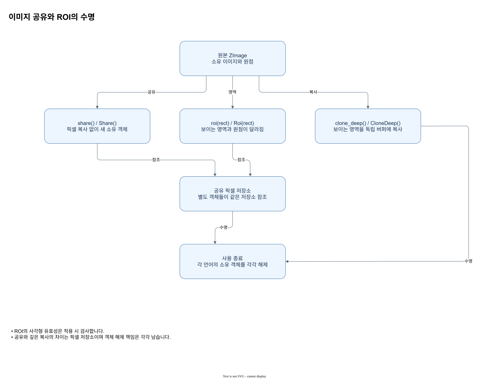

5. 원본 해제 이후에도 유효한 이유
ROI는 원본 이미지 객체의 단순 포인터만 들고 있지 않고 같은 픽셀 저장소의 소유 참조를 갖습니다. 따라서 Rust 원본 drop, C# 원본 Dispose 또는 Python 원본 close 이후에도 ROI 객체 자체를 해제하지 않았다면 읽을 수 있습니다.

판독 기준
- ROI의 사각형 유효성은 적용 시 검사합니다.
- 공유와 깊은 복사의 차이는 픽셀 저장소이며 객체 해제 책임은 각각 남습니다.
원리와 입력
ROI는 원본 영상과 독립된 핸들이지만 픽셀 저장소는 공유합니다. 원본에서 ROI를 만든 후 원본 핸들을 닫아도 ROI가 보유한 참조가 살아 있으면 ROI를 계속 읽을 수 있습니다. 반면 닫힌 원본 핸들에 다시 접근하는 것은 유효한 ROI에 접근하는 것과 다른 일입니다. 이 구별이 프레임 처리 루프에서 해제 순서를 설계할 때 중요합니다.
적용과 확인
관리형 코드에서는 ROI도 사용이 끝나면 Dispose 또는 close해야 합니다. 서로 다른 핸들을 같은 저장소의 별도 참조로 생각하면 원본을 닫았는데 메모리가 즉시 모두 반환되지 않는 이유를 이해할 수 있습니다. 실제로 저장소를 따로 확보하고 싶다면 깊은 복사를 선택하고 그 반환 객체도 따로 정리하세요. 이 설명은 문서화된 핸들과 저장소의 관계에 관한 것이며 임의의 외부 버퍼 변경이나 모든 동시 접근이 안전하다는 보장은 아닙니다.
값과 판독 기준
| 단계 | 입력 또는 결과 | 확인할 점 |
|---|---|---|
| 생성 | 원본 → ROI | 서로 다른 핸들 |
| 저장소 | 원본과 ROI | 픽셀 저장소 공유 |
| 원본 종료 | 살아 있는 ROI | 보유한 참조로 접근 |
| 독립 픽셀 | 깊은 복사 | 새 저장소 생성 |
적용할 때 살펴볼 점
예를 들어 ROI가 원본의 한 부분만 보이더라도 그 객체는 보이는 크기와 원점을 따로 갖습니다. 원본 종료 후 픽셀을 확인할 때는 아직 열려 있는 ROI 변수로 접근해야 합니다. 그 ROI를 닫은 뒤에는 저장소에 다른 참조가 남아 있더라도 해당 닫힌 핸들을 다시 사용할 수 없습니다. 필요한 데이터의 마지막 사용 시점을 정한 다음 각 핸들을 정리합니다.